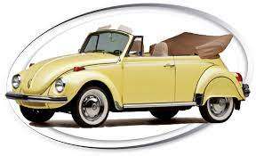
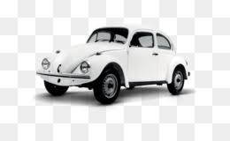
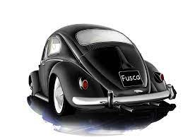
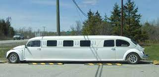
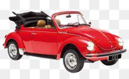
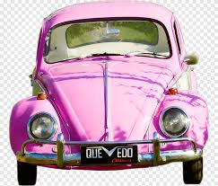

Fusca
O Volkswagen Type 1, popularmente conhecido como Fusca (no Brasil) ou Carocha (em Portugal), foi o primeiro modelo de automóvel fabricado pela companhia alemã Volkswagen, sendo produzido entre 1938 e 2003. Foi o carro mais vendido no mundo, ultrapassando em 1972 o recorde que pertencia até então ao Ford Modelo T, de origem estadunidense. Foi produzido até 2003, no México, onde era chamado de VW Sedan.[2] Ele era parte de uma edição comemorativa chamada Última Edición, limitada a 3000 carros. O último exemplar marcou o fim da longa produção de 65 anos do Fusca, durante a qual foram fabricados 21 529 464 unidades, números que fazem dele o modelo único mais produzido do mundo em todos os tempo
Fusca no Mundo
Com 21.529.464 unidades produzidas, o Fusca ainda é um dos carros mais vendidos da história. A última unidade produzida de acordo com o projeto original foi feita em 2003, no México. Os primeiros Fuscas chegaram ao Brasil em 1950 importados da Alemanha. A produção nacional começou no dia 3 de janeiro de 1959
|  |  | |
|  |  | |
|  |  |